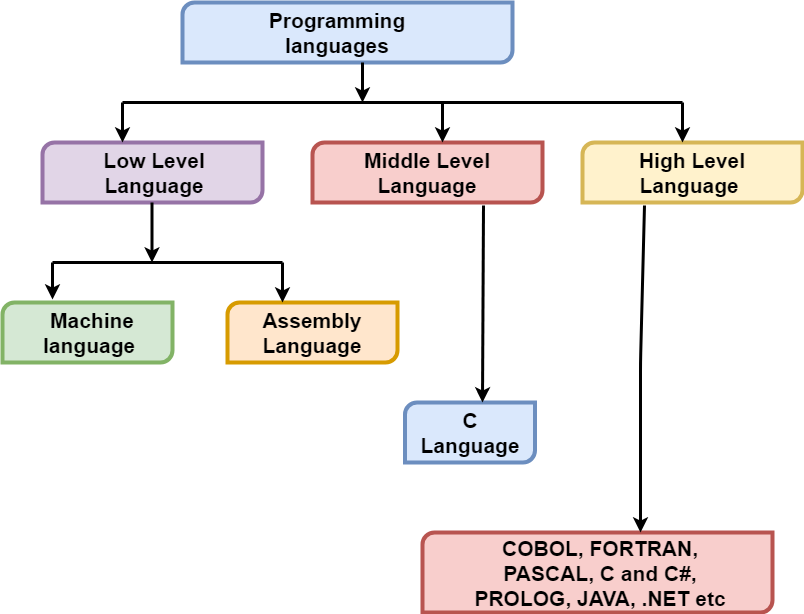

Generations of Programming Language
History
Since early 1950s, programming languages have evolved tremendously. This evolution has resulted in the development of hundreds of different languages. With each passing year, the languages become user-friendly and more powerful than their predecessors. We can illustrate the development of all the language in five generations.
FIRST GENERATION:- MACHINE LANGUAGE
The first language was binary, also known as machine language, which was used in the earliest computers and machines. We know that computers are digital devices, which have only two states, ON and OFF (1 and 0). Hence, computers can understand only two binary codes, 1 and 0. Therefore, every instruction and data should be written using 0’s and 1’s. Machine language is also known as the computer’s ‘native’ language because this system of codes is directly understood by the computer.

Advantages of machine language:
Even though machine language is not a human friendly language, it offers certain advantages, as listed below:
- Translation free: Machine language is the only language that computer can directly execute without the need for conversion. In fact, it is the only language that computer is able to understand. Even an application using high level language, has to be converted into machine- readable form so that the computer can understand the instruction.
- High speed: Since no conversion is needed, the application developed using machine languages are extremely fast. It is usually used for complex application such as space control system, nuclear reactors, and chemical processing.
Disadvantages of Machines Languages:
There are many disadvantages in using machines languages to develop program.
- Machine Dependent: Every computer type differs from the other, based on its architecture. Hence, an application developed for a particular type of computer may not run on the other type of the computer. This may prove to be both costly as well as difficult for the organization. E.g. program written for one machine, say IBM 370 cannot be executed by another machine say HP 530.
- Complex Languages: Machine language is very difficult to read and write. Since all the data and instruction must be converted to binary code, it is almost impossible to remember the instruction. A programmer must specify each operation, and the specific location for each piece of data and instruction to be stored. It means that a programmer partially needs to be a hardware expert to have proper control over the machines languages.
- Error Prone: Since the programmer has to remember all the opcodes (Operation Codes) and the memory location, it is bound to be error prone. It takes a super human effort to keep track of the logic of the problems and, therefore, result in frequent programming errors.
- Tedious: Machine language poses real problems while modifying and correcting a program. Sometimes the programming becomes too complex to modify and the programmer has to re-program the entire logic again. Therefore, it is very tedious and time consuming, and since time is a precious commodity, programming using the machine languages tends to be costly.
Due to its overwhelming limitations, machine languages is rarely used nowadays
SECOND GENERATION: Assembly (low-level) languages.
The complexities of machines languages led to the search of another language and the assembly language was developed. It was developed in the early 1950s and the main developer was IBM. Assembly language allows the programmers to interact directly with the hardware. This language assigns mnemonic codes to each machine language instruction to make it easier to remember or write. It allows better human- readable method of writing program as compared to writing in binary bit patterns.
Unlike other programming languages, assembly language is not a single language but a group of languages. Each processor family (and sometimes individual processors within a processor family) has its own assembly languages.
An assembly language provides mnemonic instructions, usually three letters long, corresponding to each machine instruction. The letters are usually abbreviated indicating what the instruction does: For example, ADD is used to perform an addition operation, MUL for multiplication, and so on. Assembly languages make it easier for humans to remember how to write instruction to the computer, but an assembly language is still a representation of the computer’s native instruction set. Since each type of computer uses a different native instruction set, assembly languages cannot be standardized from one machine to another, and instructions from one computer cannot be expected to work on another.
Assembler:
Assembly language is nothing more than a symbolic representation of machine code, which also allows symbolic designation of memory location. However, no matter how close assembly language is to machines codes, the computer still cannot understand it. The assembly language programs must be translated into machine codes by a separate program called Assemblers. The assembler program recognizes the character strings that make up the symbolic names of the various machine operations, and substitute the required machine code for each instruction. At the same time, it also calculates the required address in memory for each symbolic name of a memory location, and substitutes those addresses for the names resulting in a machine language program that can run on its own at any time. An assembler converts the assembly codes into binary codes and then it assembles the machine understandable code into the main memory of the computer, making it ready for execution.
The original assembly language program is also known as the source code, while the final machine language program is designated the object code. If an assembly language program needs to be changed or corrected, it is necessary to make the changes to the source code and then re-assemble it to create a new object program. The functions of an assembler are given below:
- It allows the programmer to the use mnemonics while writing source code programs, which are easier to read and follow.
- It allows the variable to be represented by symbolic names, not as memory locations.
- It translates mnemonic operations codes to machine code and corresponding register addresses to system addresses.
- It checks the syntax of the assembly program and generates diagnostic messages on syntax errors.
- It assembles all the instructions in the main memory for execution.
- In case of large assembly programs, it also provides linking facility among the subroutines.
- It facilitates the generations of output on required output medium.
Advantages of Assembly Language
The advantages of using assembly language to develop a program are:
- Easy to Understand and Use: Assembly language uses mnemonics instead of using numerical opcodes and memory locations used in machine language. Hence, the programs written in assembly language are much easier to understand and use when compared with machine language. Being a more user-friendly language as compared to machine language, assembly programs are easier to modify.
- Less Error Prone: Since mnemonic codes and symbolic addresses are used, the programmer did not have to keep track of the storage locations of the information and instruction. Hence, there are bounds to be less error while writing an assembly language program. Even in case of errors, assembly programs provide better facility to locate and correct them as compared to machine language programs.
- Efficiency: Assembly programs can run much faster and use less memory and other resources than a similar, program written in a high-level language. Speed increment of 2 to 20 times faster is common, and occasionally, an increase of hundreds of times faster is also possible. Apart from speed, assembly programs are also memory efficient, that is, the memory requirement of a program (size of code) is usually smaller than a similar program written in high-level language.
- More Control on Hardware: Assembly language also gives direct access to key machine features essential for implementing certain kinds of low-level routines such as an operating system kernel or micro-kernel, device drivers, and machine control.
Disadvantages of Assembly Language
The disadvantages in using assembly to develop a program are:
- Machine Dependent: Different computer architectures have own machine and assembly languages, which means that programs written in these languages are not portable to other (incompatible systems). If an assembly program is to be shifted to a different type of computer, it has to be modified to suit the new environment.
- Harder to Learn: The source code for an assembly language is cryptic (has hidden meaning) and in a very low machine specific form. Being a machine-dependent language, every type of computer architecture requires different assembly languages, making it nearly impossible for a programmer to remember and understand every dialect of assembly. More skilled and highly trained programmers, who know all about the logical structure of the computer, can only create applications using assembly language.
- Slow Development Time: Even with highly skilled programmers, assembly generated application are slower to develop as compared to high-level language based applications. In case of assembly language, several lines of assembly code are required for a line of high-level code the development time can be 10 to 100 times as compared to high-level language generated application.
- Less Efficient: A program written in assembly language is less efficient as compared to an equivalent machine language program because every assembly instruction has to be converted in to machine. Therefore, the execution of assembly language program takes more time than it equivalent machine language program. Moreover, before executing an assembly program, the assembler has to be loaded in the computer’s memory for translation and it occupies a sizeable memory of computer.
- Not Standardized:Assembly language cannot be standardized because each type of computer has a different instruction set and, therefore, a different assembly language.
- No Support for Modern Software Engineering Technology: Assembly languages provide no inherent support for software engineering technology. They work with just machine-level specifics, not with abstractions. Assembly language does not provide inherent support for safety-critical systems. It provides very little opportunity for reuse and there is no object-oriented programming support. There is also no specific support for distributed systems. The tools available for working with assembly language are typically very low-level tools.